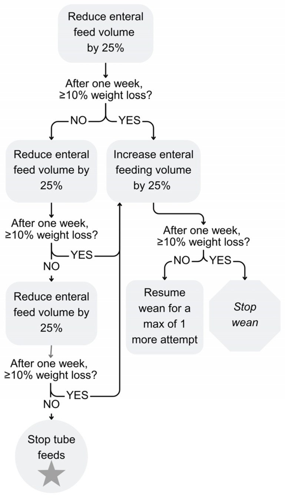
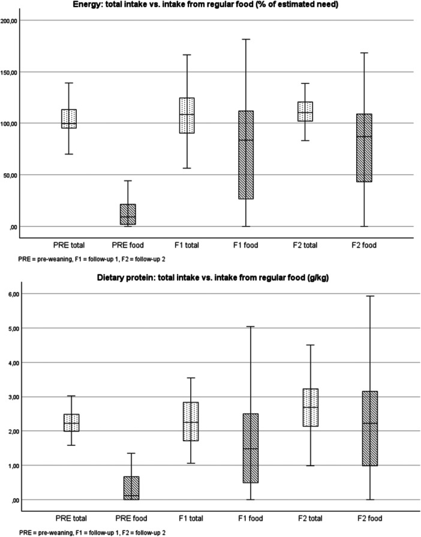

1805 — Rút ống mở thông dạ dày & cai nuôi ống ở trẻ / Weaning and removal of feeding tubes in children
Tags: pattern:cai-ong-nuoi pattern:phu-thuoc-ong vung:da-day vung:thanh-bung protocol:VFSS-FEES protocol:theo-doi-tang-truong
Mức chắc chắn (certainty): tổng hợp y văn (literature synthesis) — tổng hợp từ y văn mở 2020–2026 (Europe PMC: Edwards ST, Nutrients 2026, PMC13029489; Keski-Kuha M, J Pediatr Gastroenterol Nutr 2026, PMC13446614; Goldstein A, J Pediatr Gastroenterol Nutr 2025, PMC12314580; Papagni ME, Croat Med J 2025, PMC12426866; Marinschek S, Eur J Pediatr 2020, PMC7547996; Patel DD, World J Radiol 2025, PMC12210205; Gestels T, Pediatr Gastroenterol Hepatol Nutr 2023, PMC10192589). Số chưa kiểm chứng ghi "chưa rõ".
Bài này là "chuyện sau khi đã có ống": khi nào đủ điều kiện cai, cai theo nhịp nào, theo dõi gì, và khi nào không được cai. Biến chứng ống, buried bumper và kiểm tra vị trí đã có ở 083; an toàn nuốt ở 081 và 082.
1. Tổng quan bệnh học – cơ chế hình ảnh
- Phụ thuộc ống (tube dependency) khác "còn chỉ định y khoa": trẻ ăn được bằng miệng an toàn nhưng vẫn phụ thuộc ống vì sợ ăn, thiếu kỹ năng ăn miệng, mất cảm giác đói, hành vi né tránh và lo lắng của gia đình. Ngược lại, trẻ có chỉ định thật (sặc, hẹp, bệnh tiêu hoá hoạt động, suy dinh dưỡng nặng) không được cai cho tới khi xử lý nguyên nhân.
- Vì sao "để đói có kiểm soát" lại hiệu quả (TẠI SAO, không phải mẹo):
- Tín hiệu đói nội sinh (ghrelin, giảm leptin) tạo động lực ăn mà trẻ chưa từng trải nghiệm khi được nuôi ống liên tục.
- Giảm dần lượng qua ống làm trẻ đói đúng lúc bữa ăn → học lại phản xạ ăn miệng (bú/nhai/nuốt) và giảm né tránh qua nhiều lần tiếp xúc trung tính, không ép.
- Khung hành vi + huấn luyện cha mẹ làm giảm lo lắng và ép ăn — yếu tố duy trì vòng xoáy biếng ăn.
- Vì sao phải có ngưỡng cân nặng: giảm 25% thể tích ống mỗi tuần tạo cân bằng năng lượng âm; cơ thể huy động mỡ nhưng không được vượt quá khả năng bù. Trong các chương trình, giảm cân 3,5–9,3% là thường gặp và ≤ 10% cân nặng được coi là chấp nhận (Papagni ME 2025, PMC12426866). Vượt 10% → tăng lại 25% và chỉ thử thêm 1 lần rồi dừng (Edwards ST 2026, PMC13029489).
- Kết quả định lượng (để tư vấn, không hứa hẹn):
- Gộp các chương trình: 67–69% trẻ cai được ống; mô hình Graz (hunger provocation) đạt 80–90% (Keski-Kuha M 2026, PMC13446614).
- Helsinki, 51 trẻ, 3 tuần ngoại trú: 72,5% cai ống ở lần theo dõi cuối; năng lượng từ thức ăn thường 6,2% → 77,2%; đạm 2,2 → 2,7 g/kg; giảm cân trung vị −6,8% (IQR −8,4 đến −3,9), 13,7% giảm > 10%.
- Zagreb, 30 trẻ khó (đã thất bại cai trước đó): 90% tăng ăn miệng, 33,3% cai hẳn ngay cuối chương trình, 78% cai ở lần theo dõi trung bình 40,5 tháng.
- Sau mổ teo thực quản–rò khí–thực quản (EA/TEF), mô hình Graz: 95,3% cai hẳn, 4,7% cai một phần; giảm cân 2,42%; thời gian điều trị trung vị 62,5 ngày (Marinschek S 2020, PMC7547996).
- Theo dõi từ xa (RPM): 90% (34/38) cai thành công so với 41% (7/17) ở nhóm chứng hồi cứu — cỡ mẫu nhỏ, không ngẫu nhiên.
- Cơ chế hình ảnh – vì sao phải "nhìn động" trước khi cai:
- VFSS (videofluoroscopic swallow study) dùng barium động để thấy thời điểm sặc/ứ đọng theo từng thì nuốt; FEES dùng ống soi mềm, thấy ứ đọng và sặc sau nuốt nhưng không thấy toàn bộ thì hầu–thực quản. Không có một phương pháp nào thấy hết — chọn theo câu hỏi lâm sàng.
- X-quang cản quang qua ống xác nhận đầu ống/bóng trong dạ dày trước khi dùng để cai; bóng chứa nước thấy được trên siêu âm.
- Đường hầm ống mở thông dạ dày (G-tube tract) cần 2–4 tuần để "mature"; rút/tuột sớm → viêm phúc mạc, thủng; đây là lý do không rút ống ngay sau đặt dù trẻ đã ăn được (Patel DD 2025, PMC12210205).
- Biến chứng ống còn lại sau cai: ở trẻ dùng low-profile button, kích ứng da 47,8% trong 6 tháng, mô hạt 29,9%, đau bụng 38,8%, nôn 43,4%; biến chứng nặng hiếm (Gestels T 2023, PMC10192589) — hữu ích khi tư vấn "rút ống không có nghĩa hết vấn đề".
2. Mẫu hình + chẩn đoán phân biệt theo cơ chế (gamut)
Câu hỏi trung tâm: "vì sao trẻ còn ống?" — trả lời đúng thì mới biết cai được hay không.
- Hành vi – phụ thuộc ống: ăn miệng được nhưng sợ/ né; hay gặp sau sinh non, nằm ICU dài, đặt ống lâu, trào ngược, ép ăn.
- Rối loạn vận động miệng – hầu (oral-motor): sinh non, bại não, hội chứng Down, teo thực quản, u não; nhai/nuốt chậm, chảy nước miếng.
- Nuốt mất an toàn (dysphagia có sặc): sặc im lặng, viêm phổi tái diễn, ho khi ăn; phải VFSS/FEES trước khi cai.
- Bệnh tiêu hoá hoạt động: trào ngược nặng, viêm thực quản eosinophil, chậm rỗng dạ dày, táo bón, xoắn ruột/ malrotation, hẹp thực quản.
- Bệnh hô hấp mạn: BPD/PIBO — thở nhanh, co kéo, tụt SpO₂ khi bú/ăn → ăn miệng "tốn oxy" hơn; cần tối ưu oxy và thời điểm ăn.
- Tim mạch: tim bẩm sinh, suy tim — tăng nhu cầu năng lượng + mệt khi bú; cai ống khi chưa ổn định huyết động dễ thất bại.
- Chuyển hoá – nội tiết: suy giáp, bệnh chuyển hoá, thiếu máu — gây chậm tăng trưởng và biếng ăn.
- Giải phẫu: hẹp thực quản, rò khí–thực quản, khe hở thanh quản, vòng mạch chèn ép — không cai trước khi sửa.
- Tâm lý – xã hội: gia đình kiệt sức, lo sợ cân nặng, thiếu hỗ trợ → can thiệp gia đình là một phần điều trị, không phải "yếu tố phụ".
3. Bảng so sánh phân biệt (ma trận đối chiếu)
| Thực thể (entity) | Hình ảnh / lâm sàng điển hình | Chốt vào (rule-in) | Chốt loại (rule-out) | Gợi ý xác nhận |
|---|---|---|---|---|
| Phụ thuộc ống do hành vi | Nuốt an toàn trên VFSS/FEES; không bệnh tiêu hoá hoạt động; ăn miệng rất ít nhưng không sặc; lớn tuổi hơn, đã đặt ống lâu | Nuốt an toàn + không có bệnh lý cấp + hành vi né ăn | Sặc/ứ đọng rõ hoặc bệnh tiêu hoá hoạt động → không phải hành vi thuần | VFSS/FEES + đánh giá OT/tâm lý; thử chương trình có giám sát |
| Rối loạn vận động miệng–hầu | Yếu cơ nhai, chảy nước miếng, thức ăn rơi; bại não/Down/sinh non; nuốt chậm nhưng không sặc | Giảm sức cơ miệng–lưỡi + chậm thì miệng | Nuốt bình thường, chỉ né ăn → hành vi | Khám miệng–hầu, FEES; OT/ngôn ngữ trị liệu |
| Nuốt mất an toàn (aspiration) | Sặc khi uống/ăn, ho, viêm phổi tái diễn; VFSS thấy thuốc vào đường thở; FEES thấy ứ đọng rõ sau nuốt | Sặc xác nhận trên VFSS/FEES hoặc viêm phổi hít sặc tái diễn | Không sặc, không ứ đọng → cai được | VFSS (barium) hoặc FEES; đánh giá lại sau điều trị |
| Trào ngược / viêm thực quản eosinophil | Nôn, đau khi ăn, ứ đọng, nội soi thực quản; eosinophil tăng trong niêm mạc (ngưỡng chuẩn 15/HPF — chưa đối chiếu nguồn trong bài) | Triệu chứng + đáp ứng PPI/điều trị + nội soi | Không triệu chứng, nội soi bình thường | Nội soi ± sinh thiết; thử PPI có kiểm soát |
| Chậm rỗng dạ dày / tắc nghẽn | Nôn dịch cũ, chướng bụng, ứ đọng thức ăn; X-quang/CT/SMA–SMV | Hình ảnh tắc nghẽn hoặc chậm rỗng xác nhận | Bụng mềm, không nôn, tăng cân | Siêu âm/CT bụng; đánh giá ngoại khoa |
| Bệnh hô hấp mạn (BPD/PIBO) | Thở nhanh, co kéo, SpO₂ tụt khi bú/ăn, khò khè; HRCT ứ khí thì thở ra | Tụt SpO₂ khi ăn + bệnh phổi mạn | SpO₂ ổn định khi ăn, không co kéo | Theo dõi SpO₂ trong bữa ăn; tối ưu oxy; cross-link 1803 |
| Tim bẩm sinh / suy tim | Mệt khi bú, ra mồ hôi, gan to, suy dinh dưỡng; siêu âm tim bất thường | Suy tim/ shunt lớn còn gánh huyết động | Huyết động ổn định, siêu âm bình thường | Siêu âm tim; hội chẩn tim mạch trước cai |
| Sau rút ống: rò da–dạ dày tồn tại | Dịch dạ dày chảy qua lỗ mở thông nhiều tuần; kích ứng da | Rò kéo dài + viêm da | Lỗ đóng trong vài ngày | X-quang cản quang qua lỗ; tiêu hoá/ngoại |

*Giảm thể tích ống 25%; sau 1 tuần nếu giảm cân ≥ 10% → tăng lại 25%, chỉ cho thêm 1 lần thử rồi dừng cai; nếu < 10% → tiếp tục giảm 25% cho tới khi bỏ hẳn ống. Nguồn: Edwards ST et al., Nutrients 2026 (PMC13029489), CC BY 4.0.*4. Protocol cai ống + theo dõi dinh dưỡng
4.1. Trước khi bắt đầu — 7 việc bắt buộc
- Xác nhận chỉ định ống không còn: bệnh tiêu hoá/hô hấp/tim ổn định, không còn đợt cấp.
- Đánh giá nuốt: VFSS khi nghi sặc/ứ đọng hoặc có bệnh thần kinh–cơ; FEES khi cần đánh giá tại giường/theo dõi. Không cai nếu chưa chứng minh nuốt an toàn.
- Tăng trưởng: cân, cao, z-score cân/cao/BMI ít nhất 3 điểm theo thời gian; ghi đường cong, không chỉ một con số.
- Vi chất: ferritin/CBC, vitamin D, B12, folate, kẽm — vì sau cai năng lượng có thể đủ nhưng vi chất thiếu (Keski-Kuha M 2026).
- Đường tiêu hoá: đánh giá trào ngược, táo bón, chậm rỗng; điều trị trước.
- Đường thở: trẻ BPD/PIBO cần SpO₂ khi ăn, tối ưu oxy; trẻ có TBM ăn chậm hơn.
- Gia đình & tâm lý: giải thích giảm cân là dự kiến, có kế hoạch liên lạc 24/7, không ép ăn; đánh giá trầm cảm/lo âu của cha mẹ và khả năng theo dõi.
4.2. Chương trình & nhịp cai
- Mô hình: nội trú, bán trú/ngày, ngoại trú, theo dõi từ xa, hoặc kết hợp. Bằng chứng: đa mô hình đều hiệu quả, nhóm bán trú/nội trú tăng năng lượng miệng nhiều hơn ngoại trú (82,6% vs 70,5% trong tổng quan) (Goldstein A 2025, PMC12314580).
- Đội ngũ: bác sĩ nhi, chuyên gia dinh dưỡng, ngôn ngữ trị liệu/OT, tâm lý, điều dưỡng — ≥ 3 người ở hầu hết chương trình.
- Nhịp giảm: 25% thể tích ống mỗi tuần; cân hàng ngày (nội trú) hoặc 2–3 lần/tuần (ngoại trú).
- Quy tắc an toàn (theo lưu đồ):
- Giảm cân < 10% → tiếp tục giảm 25%.
- Giảm cân ≥ 10% → tăng lại 25%, đánh giá lại; nếu vẫn tiếp tục giảm → thử thêm 1 lần rồi dừng.
- Dừng ngay khi: mất nước (tiểu ít, Na tăng), hạ đường huyết, sặc/viêm phổi, suy hô hấp, giảm cân > 10% không bù được, hoặc gia đình không còn theo dõi được.
- Bù nước – năng lượng: không "bù bằng sữa cao năng lượng qua ống" trong lúc cai nếu mục tiêu là học ăn; ưu tiên bữa nhỏ, đậm năng lượng, thức ăn yêu thích, không kéo dài bữa quá lâu, không ép.
- Thời điểm rút ống: khi trẻ ăn đủ và tăng cân qua nhiều lần khám liên tiếp (theo chương trình; chưa có ngưỡng thời gian thống nhất trong nguồn đã đọc), nuốt an toàn, không còn dùng ống cho thuốc/dịch; kiểm tra vị trí ống trước lần dùng cuối; đường hầm đã mature ≥ 2–4 tuần nếu là G-tube.
4.3. Theo dõi sau cai (quan trọng ngang lúc cai)
| Thời điểm | Việc làm | Ngưỡng/quyết định |
|---|---|---|
| 1 tháng | Cân, chiều cao, nhật ký ăn 3 ngày, triệu chứng tiêu hoá | Giảm cân liên tiếp qua 2 lần khám hoặc tụt z-score → tăng mật độ năng lượng/hỗ trợ dinh dưỡng |
| 3–6 tháng | Lặp z-score, ferritin/vitamin D/B12/kẽm, đánh giá hành vi ăn | Vi chất thấp → bổ sung, không chờ triệu chứng |
| 12 tháng | Tăng trưởng, ăn đa dạng, chất lượng sống | 44% trẻ cai ống từng bị suy dinh dưỡng sau 1 năm trong một đoàn hệ → tiếp tục theo dõi |
| Bất kỳ lúc nào | Nôn tái diễn, sặc, sụt cân, mệt | Đánh giá lại nuốt; cân nhắc đặt lại ống — không coi là "thất bại" |
flowchart TD
A[Trẻ còn ống nuôi ăn] --> B{Chỉ định y khoa còn?}
B -->|Có| C[Điều trị nguyên nhân, chưa cai]
B -->|Không| D[VFSS hoặc FEES + đánh giá tăng trưởng và vi chất]
D --> E{Nuốt an toàn?}
E -->|Không| F[Trị liệu nuốt, giữ ống, đánh giá lại]
E -->|Có| G[Giảm 25 phan tram thể tích ống mỗi tuần]
G --> H{Cân nặng giảm từ 10 phan tram?}
H -->|Không| I{Tự ăn đủ và tăng cân 2 đến 4 tuần?}
I -->|Chưa| G
I -->|Rồi| J[Rút ống, theo dõi 1 3 6 12 tháng]
H -->|Có| K[Tăng lại 25 phan tram, đánh giá]
K --> L{Còn giảm cân?}
L -->|Không| G
L -->|Có| M[Thử thêm 1 lần rồi dừng, giữ ống]
5. Biến thể bình thường và cạm bẫy
- "Giảm 10%" là giới hạn an toàn, không phải mục tiêu: nhiều trẻ chỉ giảm 3,5–9,3%; cố đạt 10% là hại.
- Cai ống ≠ ăn đủ: ở Helsinki, 72,5% cai ống nhưng chỉ 36,4% đạt ≥ 100% nhu cầu năng lượng hoàn toàn từ thức ăn ở lần theo dõi cuối → phải theo dõi dài, không dừng khi "đã rút ống".
- Vi chất thiếu dù năng lượng đủ: sắt, vitamin D, kẽm, B12 thường không đạt sau cai → bổ sung có kế hoạch (Keski-Kuha M 2026).
- Chiều cao có thể giảm z-score dù cân hồi phục (−1,5 → −1,7 SD, p = 0,045) — đừng chỉ nhìn cân.
- Nôn/ọe có thể còn: 17,6% vẫn tăng nôn/ọe, 23,5% táo bón sau cai; đây là lý do không hứa "hết bệnh".
- Không cai trong đợt cấp: nhiễm trùng, mất nước, suy hô hấp, mổ gần đây → hoãn.
- Đường hầm G-tube 2–4 tuần: rút/tuột sớm → viêm phúc mạc/thủng; không thử rút sớm để "xem sao" (Patel DD 2025).
- Button/PEG có bóng: trước khi rút phải loại trừ buried bumper (bài 083), kiểm tra bóng còn nguyên/không di trú; nếu có biến chứng → xử lý trước.
- Trẻ BPD/PIBO: ăn miệng tăng công hô hấp → tụt SpO₂ khi ăn dễ bị coi là "biếng ăn"; phải đo SpO₂ trong bữa và tối ưu oxy.
- Sặc im lặng: không ho không có nghĩa an toàn — VFSS/FEES mới trả lời; bỏ qua bước này là nguyên nhân thất bại và viêm phổi.
- "Cai một lần là xong": một số trẻ phải đặt lại ống — tổng quan ghi nhận thiểu số cần đặt lại; đặt lại không phải thất bại của gia đình.
6. Tự lượng giá — Blind Quiz
Ca 1 — Bé 2 tuổi, đặt PEG 18 tháng vì sinh non + trào ngược. Đã điều trị trào ngược, nuốt an toàn trên VFSS. Tuần 1 giảm 25% lượng ống, cân giảm 8%. Tuần 2 giảm tiếp 25%, cân giảm 11%. Bước tiếp theo?
- Câu hỏi: Tuần 1 bạn làm gì? Tuần 2 có tiếp tục giảm không? Khi nào dừng hẳn?
Bấm để hiện đáp án (findings + chẩn đoán)
- Tuần 1: giảm 8% < 10% → tiếp tục giảm 25% (theo lưu đồ).
- Tuần 2: giảm 11% ≥ 10% → tăng lại 25%, đánh giá lại; nếu vẫn giảm cân → thử thêm 1 lần rồi dừng cai.
- Dừng hẳn khi trẻ tự ăn đủ + tăng cân 2–4 tuần, nuốt an toàn; không dựa vào một lần cân.
- Nguồn ảnh: Edwards ST et al., Nutrients 2026 (PMC13029489), CC BY 4.0.
Ca 2 — Bé 3 tuổi cai ống 3 tháng, cân nặng ổn định theo z-score, nhưng ferritin thấp và vitamin D thấp. Mẹ hỏi "đã ăn đủ sao còn thiếu?".

- Câu hỏi: Đọc biểu đồ: năng lượng/đạm từ thức ăn thay đổi thế nào? Vì sao năng lượng đủ mà vi chất vẫn thiếu? Xử trí?
Bấm để hiện đáp án (findings + chẩn đoán)
- Biểu đồ: năng lượng từ thức ăn tăng mạnh (trung vị 6,2% → 77,2% tổng năng lượng), đạm 2,2 → 2,7 g/kg; nhưng khoảng IQR rất rộng — nhiều trẻ ăn dưới nhu cầu.
- Năng lượng đủ không bảo đảm đủ sắt/kẽm/vitamin D/B12: thức ăn ít đa dạng, hấp thu kém, nhu cầu cao khi đang bắt kịp tăng trưởng.
- Xử trí: bổ sung theo xét nghiệm, tư vấn đa dạng thực phẩm, lặp xét nghiệm sau 3 tháng; không tự dừng theo dõi vì "cân ổn".
- Nguồn ảnh: Keski-Kuha M et al., J Pediatr Gastroenterol Nutr 2026 (PMC13446614), CC BY-NC-ND 4.0 (nguyên bản).
Ca 3 — Bé 18 tháng sau mổ teo thực quản, ho và thở khò khè sau mỗi bữa, đã 2 lần viêm phổi. Gia đình xin "cai ống luôn cho gọn". Bạn làm gì?
- Câu hỏi: Có chỉ định cai ngay không? Cần làm gì trước? Dấu hiệu nào chống chỉ định cai?
Bấm để hiện đáp án (findings + chẩn đoán)
- Không cai ngay: ho + khò khè sau ăn + viêm phổi tái diễn gợi ý sặc/ứ đọng hoặc hẹp/rò thực quản — cần VFSS/FEES và đánh giá ngoại khoa trước.
- Chống chỉ định tạm thời: sặc xác nhận, viêm phổi đang hoạt động, hẹp thực quản chưa xử lý, suy dinh dưỡng nặng, gia đình không theo dõi được.
- Nếu nuốt an toàn và không hẹp: mới vào chương trình giảm 25%/tuần, theo dõi cân hàng ngày/tuần.
- Nguồn số liệu: Marinschek S et al., Eur J Pediatr 2020 (PMC7547996), CC BY 4.0; Goldstein A et al., J Pediatr Gastroenterol Nutr 2025 (PMC12314580), CC BY-NC-ND 4.0.
Bài liên quan chéo
- 600 – Tổng quan Nhi khoa
- 083 – Nuôi ăn qua sonde & mở thông dạ dày: biến chứng, kiểm tra vị trí
- 082 – Bại não & an toàn nuốt ở trẻ
- 081 – Sặc & rối loạn nuốt
- 606 – BPD: bệnh phổi mạn ở trẻ sinh non
- 1803 – OSA ở trẻ bệnh phổi mạn
Ảnh
images/1805_hunger-provocation_Luudo_PMC13029489.jpg— CC BY 4.0.images/1805_nang-luong-protein-sau-cai_Bieudo_PMC13446614.jpg— CC BY-NC-ND 4.0 (nguyên bản).- Nguồn + giấy phép từng ảnh:
images/CREDITS.md; link gốc:sources.md.
Không dùng để chẩn đoán độc lập khi chưa có người hướng dẫn.